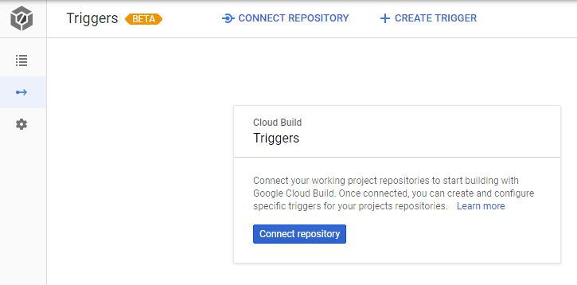
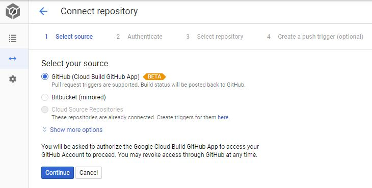
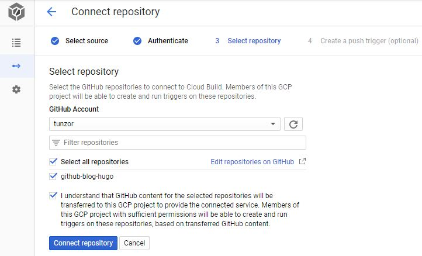
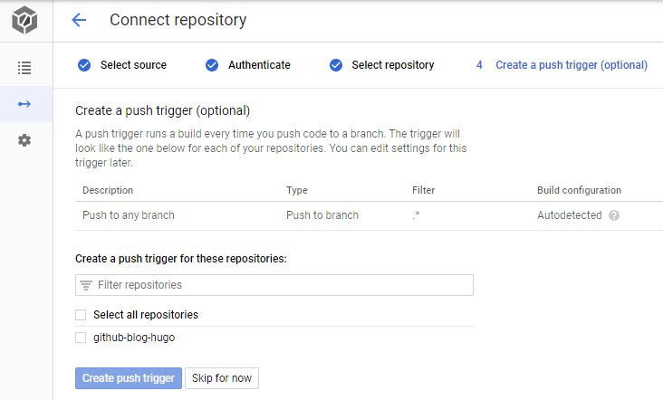
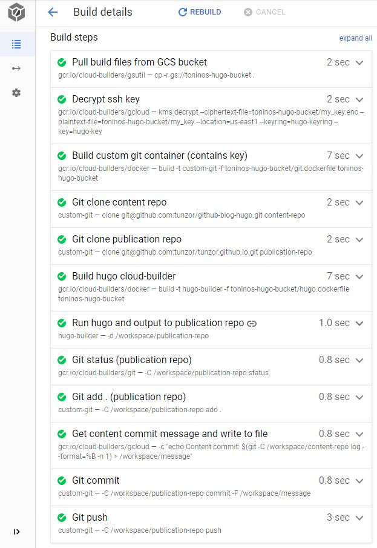

Hugo is a really cool tool for getting a blog up and running quickly.
In a previous post I outlined how to use it to generate a site and then host that site on Github Pages or Google Cloud Storage. Now I want to take it a step further and automate its publication on Github Pages. Why? Cause I’m lazy, automation is cool, and doing so will make us look better in the optical sensors of our eventual robot overlords.
All work and no automation makes Jack a wet programmer
I currently have two repositories for this site that you’re reading: one to hold the markdown files (the content repo) and another for the generated site pages served by Github Pages (the publication repo). The workflow that I follow is:
- Edit the markdown files
- Push them to the content repo
- Run hugo
- Copy the contents of the generated
publicdirectory to a separate local git workspace tracked by the publication repo - Push those contents to the publication repo
Not a particularly difficult or lengthy workflow but one that can be easily automated so my human oversights leading to inevitable errors can be taken out of the mix. Definitely never pushed the entire content repo to the publication repo instead of just the public directory.

Building with clouds
Cloud Build is a hosted CI tool from Google that lets you run build steps as docker containers that share a volume (/workspace) on the ephemeral node they run on; this allows each step to use output from previous steps.
The free tier includes 120 build minutes per day for free, way more than what we’ll probably use as Hugo takes seconds to generate a site. They have many official builder images available, in addition to a sizeable list of community-made ones and wouldn’t you know it, someone made one for Hugo!
Before we jump into it, let’s quickly recap the workflow we’ll be modeling in Cloud Build:
- Set up SSH keys to allow automated access to the repos
- Pull down the content and publication repos
- Build our content repo with Hugo
- Copy the
publicdirectory to the publication repo’s folder - Push the publication repo with the generated files
Ya gotta be this tall to ride
A few Google Cloud prerequisites that we need to have completed before we begin.
- A Google Cloud Platform account (duh)
- A GCP project
- Cloud KMS and Cloud Build services enabled on the project
gcloudtool installed and setup
The keys to the castle in the sky
The first hurdle that we need to clamber over is a surely a favourite of everyone’s: security. In order to pull from and push to the repos, we’ll need to authenticate with them and we’ll be using ssh keys for that.
Firstly, we generate a key pair (private and public):
# -f is the output key name; change it to whatever you like or leave it empty to use the default
ssh-keygen -t rsa -f my_key
Then we copy the public key portion (my_key.pub) and add it to our Github account on the SSH keys page by clicking on New SSH key and pasting it in. That was the easy part, now we need to take care of the private key and we’ll be using Google’s Cloud KMS and GCS services for that.
The plan is to store the private key in a GCS bucket and have Cloud Build pull it down each time it runs a build. But surely, storing a private key in plaintext is bad practice? It is, and don’t call me Shirley. That’s why we’re going to use KMS to encrypt the key before we put it in the bucket and have Cloud Build decrypt it as part of the build.
KMS needs a couple of things setup before we can begin using it: a keyring (logical grouping of keys) and a key (used to encrypt and decrypt). We can issue the following commands to create them both:
# Make sure you set your project ID first
gcloud config set project YOUR_PROJECT_ID
# Create the keyring
gcloud kms keyrings create hugo-keyring \
--location=us-east1
# Create the key; MUST be same location and keyring specified above
gcloud kms keys create hugo-key \
--location=us-east1 \
--keyring=hugo-keyring \
--purpose=encryption
One last thing we need to do is grant the Cloud Build service account the appropriate KMS role to decrypt (the service account can be found on the IAM page of your GCP project; it’s the one that ends in cloudbuild.gserviceaccount.com):
gcloud projects add-iam-policy-binding YOUR_PROJECT_ID \
--member serviceAccount:123456789012@cloudbuild.gserviceaccount.com \
--role roles/cloudkms.cryptoKeyDecrypter
Next we’re going to encrypt the private key and push it to a GCS bucket. In the directory containing the private key that we generated in a previous step, we’ll run the following:
# Key, keyring, and location come from the previous steps
gcloud kms encrypt \
--key=hugo-key \
--keyring=hugo-keyring \
--location=us-east1 \
--plaintext-file=my_key \
--ciphertext-file=my_key.enc
# Create a bucket; bucket name MUST be unique
gsutil mb -l us-east1 gs://toninos-hugo-bucket
# Copy encrypted key to the bucket
gsutil cp my_key.enc gs://toninos-hugo-bucket
# Grant the Cloud Build service account permissions to read from the bucket
gcloud projects add-iam-policy-binding YOUR_PROJECT_ID \
--member serviceAccount:123456789012@cloudbuild.gserviceaccount.com \
--role roles/storage.objectViewer
Security key setup: complete.
The chicken and the egg
We need a few additional files in our bucket before we can move on: two dockerfiles and a shell script for some images we’ll be building. They’re text files though, so why don’t we just put them in the content repo?
The problem is they’re needed to build the custom git container we’ll be using to pull from Github and we can’t pull the content repo unless we have a container with that SSH key. See the chicken and egg thing now?
Fortunately, this is an easy fix; we’re going to put the files in the same GCS bucket as the SSH key from above and grab them all at once in the cloudbuild.yaml outlined further down on this page. We can use the same gsutil command from before to push them (dockerfiles and shell script are here):
gsutil cp git.dockerfile hugo.dockerfile entrypoint.sh gs://toninos-hugo-bucket
Side Note
We could put them in an entirely different repo and make it public but since we’re already storing and retrieving the key from the bucket, it makes some sense to store everything in it and save ourselves an additional build step. You could argue that they’re better off in source control if we want to make and track changes, so feel free to move them there and add another git step with the git cloud-buildergcr.io/cloud-builder/gitif you like. Life is all about options.
Config(ure) it real good
With security finally out of the way properly handled and our dependency files in place, we can now move on to the fun part: configuring Cloud Build to do our bidding. We do this with a build config file (written in yaml) aptly named cloudbuild.yaml.
Side Note
All of the code referenced below is available in this repo.
Behold the wall of text that is the cloudbuild.yaml! It’s really not that bad.
steps:
# Grab dockerfiles, entrypoint script,
# and encrypted ssh key from GCS bucket
- id: Pull build files from GCS bucket
name: gcr.io/cloud-builders/gsutil
args: ["cp","-r","gs://toninos-hugo-bucket","."]
- id: Decrypt ssh key
name: gcr.io/cloud-builders/gcloud
args:
- kms
- decrypt
- --ciphertext-file=${_BUCKET_DIR}/my_key.enc
- --plaintext-file=${_BUCKET_DIR}/my_key
- --location=us-east1
- --keyring=hugo-keyring
- --key=hugo-key
- id: Build custom git container (contains key)
name: gcr.io/cloud-builders/docker
args: ["build","-t","${_GIT_IMAGE}","-f","${_BUCKET_DIR}/git.dockerfile","${_BUCKET_DIR}"]
- id: Git clone content repo
name: ${_GIT_IMAGE}
args: ["clone","git@github.com:tunzor/github-blog-hugo.git","${_CONTENT_DIR}"]
- id: Git clone publication repo
name: ${_GIT_IMAGE}
args: ["clone","git@github.com:tunzor/tunzor.github.io.git","${_PUBLICATION_DIR}"]
# Can also be built separately and pushed to GCR
- id: Build hugo cloud-builder
name: gcr.io/cloud-builders/docker
args: ["build", "-t","${_HUGO_IMAGE}","-f","${_BUCKET_DIR}/hugo.dockerfile","${_BUCKET_DIR}"]
# Run hugo to generate site; output to publish repo from above
- id: Run hugo and output to publication repo
name: ${_HUGO_IMAGE}
dir: "${_CONTENT_DIR}"
args: ["-d","${_WS}/${_PUBLICATION_DIR}"]
- id: Git status (publication repo)
name: gcr.io/cloud-builders/git
args: ["-C","${_WS}/${_PUBLICATION_DIR}","status"]
- id: Git add . (publication repo)
name: ${_GIT_IMAGE}
args: ["-C","${_WS}/${_PUBLICATION_DIR}","add", "."]
- id: Get content commit message and write to file
name: gcr.io/cloud-builders/gcloud
entrypoint: /bin/bash
args: ["-c","echo Content commit: $(git -C ${_WS}/${_CONTENT_DIR} log --format=%B -n 1) > ${_WS}/message"]
- id: Git commit
name: ${_GIT_IMAGE}
args: ["-C","${_WS}/${_PUBLICATION_DIR}","commit", "-F", "${_WS}/message"]
- id: Git push
name: ${_GIT_IMAGE}
args: ["-C","${_WS}/${_PUBLICATION_DIR}","push"]
substitutions:
_GIT_IMAGE: custom-git
_BUCKET_DIR: toninos-hugo-bucket
_HUGO_IMAGE: hugo-builder
_WS: /workspace
_CONTENT_DIR: content-repo
_PUBLICATION_DIR: publication-repo

The Breakdown
Each of the items under steps is a docker container running from its image defined in the name attribute. Official dockerhub images can be used with just the image name (e.g. ubuntu or busybox) or a full path to a docker repo can be specified (e.g. gcr.io/cloud-builders/gcloud). Arguments can be provided to the container via the args attribute and the id attribute is used to both identify the container in the build details page and to facilitate serial or concurrent execution of steps.
Side Note
Thegcr.io/cloud-builderimages are especially great since they’re cached on the Cloud Build nodes, so usage of them is lightning quick.
In this snippet of the first step, we’re using the cloud-builder image that contains the gsutil tool to copy some files from a GCS bucket to the build node.
steps:
- id: Pull build files from GCS bucket
name: gcr.io/cloud-builders/gsutil
args: ["cp","-r","gs://toninos-hugo-bucket","."]
Next we decrypt the SSH key copied from the bucket in the previous step and write it to a file on the build node.
- id: Decrypt ssh key
name: gcr.io/cloud-builders/gcloud
args:
- kms
- decrypt
- --ciphertext-file=${_BUCKET_DIR}/my_key.enc
- --plaintext-file=${_BUCKET_DIR}/my_key
- --location=us-east1
- --keyring=hugo-keyring
- --key=hugo-key
Once we have the key, we build a new image on top of alpine/git that configures ssh to use it and configures git with a username and email (the two files it uses are this dockerfile and this entrypoint.sh).
- id: Build custom git container (contains key)
name: gcr.io/cloud-builders/docker
args: ["build","-t","${_GIT_IMAGE}","-f","${_BUCKET_DIR}/git.dockerfile","${_BUCKET_DIR}"]
Side Note
You could instead pre-build this image, push it to a storage repo (dockerhub/GCR), and pull it down as a step. This would however, make the key available in another form and in plaintext (inside the image), which is no bueno. You could argue that doing so would make the build faster (that’s true) but the trade-off of about 4 seconds doesn’t seem worthwhile enough to me.
Now that the custom git container is built and available locally on the node, we use it a couple of times to pull down the content and publication repos we mentioned in the beginning.
- id: Git clone content repo
name: ${_GIT_IMAGE}
args: ["clone","git@github.com:tunzor/github-blog-hugo.git","${_CONTENT_DIR}"]
- id: Git clone publication repo
name: ${_GIT_IMAGE}
args: ["clone","git@github.com:tunzor/tunzor.github.io.git","${_PUBLICATION_DIR}"]
We face a similar scenario as the custom git container above with the hugo image we need to build. I decided to leave its docker build in for simplicity and portability; everything needed to complete the publication of the site is either in the cloudbuild.yaml or the GCS bucket. Just know that you could publish the hugo image separately if you choose. Life is all about options.
- id: Build hugo cloud-builder
name: gcr.io/cloud-builders/docker
args: ["build", "-t","${_HUGO_IMAGE}","-f","${_BUCKET_DIR}/hugo.dockerfile","${_BUCKET_DIR}"]
We can now run hugo with the container we built to generate the site and output it to the directory that contains our publication repo.
- id: Run hugo and output to publication repo
name: ${_HUGO_IMAGE}
dir: "${_CONTENT_DIR}"
args: ["-d","${_WS}/${_PUBLICATION_DIR}"]
The final few steps are the normal flow of git commands when pushing to a repo: status, add, commit, and push. The interesting bit that I want to point out is the step below, which grabs the last commit message from the content repo and uses it for the publication repo. It reads the commit with git log and outputs it to a file.
- id: Get content commit message and write to file
name: gcr.io/cloud-builders/gcloud
entrypoint: /bin/bash
args: ["-c","echo Content commit: $(git -C ${_WS}/${_CONTENT_DIR} log --format=%B -n 1) > ${_WS}/message"]
I went this route because I couldn’t seem to get escaped quotations to work in the cloudbuild.yaml file; the git commit -m command expects them to surround the message string. This just wouldn’t work:
- id: THIS WOULDN'T WORK...
name: ${_GIT_IMAGE}
args: ["-C","${_WS}/${_PUBLICATION_DIR}","commit", "-m", "Messages with spaces don't work..."]
Side Note
The only difference for the commit command when using a file is the-Fflag instead of the normal-mflag.
The final chunk is a set of defined substitution variables used in previous steps.
substitutions:
_GIT_IMAGE: custom-git
_BUCKET_DIR: toninos-hugo-bucket
_HUGO_IMAGE: hugo-builder
_WS: /workspace
_CONTENT_DIR: content-repo
_PUBLICATION_DIR: publication-repo
Pull the trigger, yeah
We could take this cloudbuild.yaml and initiate a build with the following command:
gcloud builds submit --config cloudbuild.yaml --no-source
It would appear on the build history page and do everything we want but that’s not the full automation story then. In order to go whole hog, we’re going to setup one last thing: a cloud build trigger that listens to the content repo for changes.
This first part must be done through the GCP cloud console web page. We connect a repo by navigating to the triggers page in the GCP cloud console and clicking the Connect repository button.

From there we follow the process to authorize the Cloud Build Github App to access our Github account.

Then choose the repo we want to connect.

On the final step (Create a push trigger), click the Skip for now button. We’ll setup a push trigger with gcloud next.

The push trigger on our content repo is created with the following command (the github part in the create command is not a configurable name):
gcloud beta builds triggers create github \
--repo-name=github-blog-hugo \
--repo-owner=tunzor \
--branch-pattern=".*" \
--build-config=cloudbuild.yaml
This listens for changes on any branch (you can change the --branch-pattern above to a specific branch) and runs the cloudbuild.yaml found in the root of the content repo.
Wrap-up and post mortem
Success! We now have a fully automated pipeline that will deploy changes to a hugo generated site hosted on Github Pages in about 40 seconds. Not too shabby. 
Build Limitations
As it is, the pipeline doesn’t do any checks to see if the git status comes back with no changes found. If it does, this will cause the build to fail as there is nothing to commit and push.
The way around this is to add [skip ci] to your git message when committing to the content repo. This will still fire a trigger to cloud build but it won’t actually run a build.
Improvements
As mentioned above, moving the dependency files (
git.dockerfile,hugo.dockerfile,entrypoint.sh) to a separate repo and pulling that down would improve maintainability.Pre-building the
hugoimage and pulling it down from GCR would improve build time.Solving the
git commit -mquotation issue would reduce the number of steps and improve simplicity.